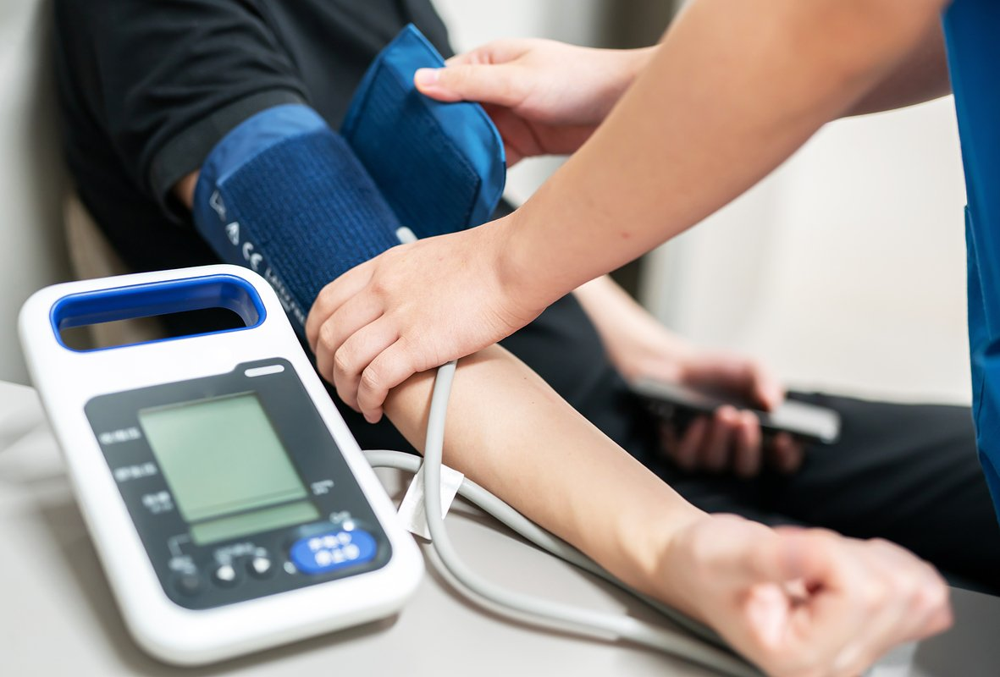

Чтобы заниматься бегом без вреда для здоровья, стоит выполнить несколько действий еще до начала физической нагрузки.
Пройти медицинский осмотр
Многие бегуны — как начинающие, так и профессиональные — часто пренебрегают походами к врачу, и очень зря. Некоторые заболевания развиваются бессимптомно, а большая нагрузка может их усугубить. Специалисты Национального медицинского исследовательского центра терапии и профилактической медицины рекомендуют не начинать даже легких коротких пробежек без базового обследования. В него входит общий анализ крови, ЭКГ и УЗИ сердца, а также тест на беговой дорожке, который оценивает работу сердца под нагрузкой.
Заболевания, при которых занятия бегом строго противопоказаны:
- болезни печени, при которых развиваются болевые приступы;
- болезни желудочно-кишечной системы в острой стадии;
- хронические заболевания дыхательной системы (бронхиальная астма);
- сердечно-сосудистые заболевания (врожденный порок сердца, сердечная недостаточность, тромбофлебит ног);
- травмы опорно-двигательного аппарата;
- патологии центральной нервной системы (эпилепсия);
- инфекционные заболевания в острой стадии.
Если врачи обнаружили какую-то из этих патологий, лучше заменить бег на северную ходьбу или велосипедные прогулки
Подобрать правильную спортивную одежду и обувь
Приятная и эффективная пробежка начинается с грамотно подобранных беговых кроссовок. Какой тип обуви подойдет человеку, зависит от его походки, пронации и от того, как нога ударяется о землю. Чтобы облегчить себе задачу, лучше посоветоваться с ортопедом и затем — с консультантом в обувном магазине. Выбирать для пробежек туристические или прогулочные кроссовки точно не стоит.
Риски при выборе неправильной обуви:
- потертости и мозоли на ногах;
- деформация ногтей, вросшие ногти;
- отеки, онемение и судороги;
- травмирование.
Спортивный костюм не менее важен: во-первых, он обеспечивает удобство при беге, а во-вторых, помогает регулировать температуру тела в зависимости от погоды.
- Если на улице жарко и влажно, следует надевать одежду светлых тонов, которая меньше весит и не пропускает влагу. Так будет прохладнее.
- Если холодно, надевать следует три слоя: первый должен отводить влагу от тела, второй — содержать утеплитель (шерсть, пух или флис), а третий — быть устойчивым к воде и ветру.
Также рекомендуется выбирать одежду со светоотражающими элементами — в ней бегун будет более заметен для водителей. Женщинам стоит надевать на пробежку поддерживающий спортивный бюстгальтер.
Определить время и место для занятий
Тренировки должны доставлять удовольствие, а не тяготить, поэтому стоит проанализировать, когда заниматься удобнее всего: это должно быть время, в которое бегуна не отвлечет работа или домашние дела. Чаще всего люди бегают по утрам или вечерам: утренняя пробежка помогает проснуться и дисциплинирует, а вечерняя расслабляет и позволяет побыть наедине с собой.
В качестве места для пробежек начинающему бегуну идеально подойдут стадион или манеж с ровным жестким покрытием. Это обеспечивает защиту от машин и позволяет ориентироваться на специальную разметку. Чтобы усложнить задачу, можно попробовать бегать в парке, в лесу или в поле.